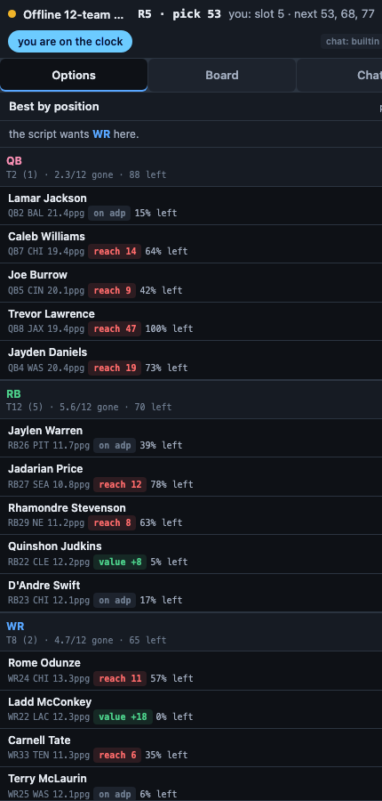

A live assistant that docks beside your draft room: real-time board, best available by position, the odds a player survives to your next pick, and a chat you can ask in plain English.
Advisory only — it never auto-drafts for you.
Sleeper needs no login at all. Yahoo connects through Yahoo's own official sign-in — your password never touches this service. Platform names and marks belong to their owners; used only to describe compatibility.
Every candidate carries a survival probability from Monte Carlo simulations of the rival picks between now and your next turn — so you know when you can wait and when waiting loses him.
Four live shortlists ordered by the strategy you chose — RB-heavy, zero-RB, best-player-available and more — with value and reach flagged against market ADP.
“Will Kraft last?” “Why not Nabers?” “Walk me through the next three rounds.” Short verdict first; say “more” for the full reasoning. Injuries and rookie context are already priced in.
One click from the Chrome Web Store. It stores nothing but your settings.
Sleeper today, Yahoo in beta. The copilot docks itself on the right — resizable, collapsible, out of the way.
The board mirrors every pick live. You read, you ask, you pick — it never clicks anything.

Every suggestion is a scored breakdown you can expand: projection versus positional replacement, ADP value or reach, tier scarcity, roster fit, injury status, and the simulated odds at your next pick. Rankings and strategy are built on Joel Smyth's 2026 Draft Guide, and the engine shows its work on every pick. It recommends — the pick is always yours.